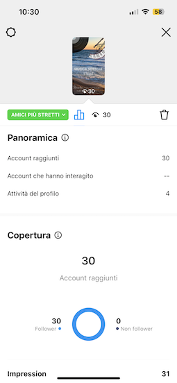
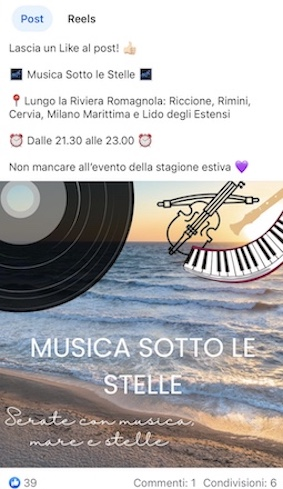
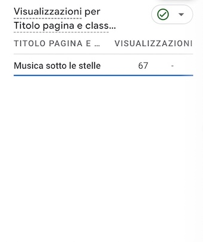

Il nome del progetto è Musica Sotto le Stelle. Si tratta della realizzazione di un evento nella stagione estiva che ha come protagonista la rivisitazione della musica in chiave classica grazie all'orchestra Filarmonica del Teatro Comunale di Bologna. Il progetto è rivolto a tutti gli amanti della musica, prettamente al target over 30, ma grazie alla varietà degli artisti permette l'incontro di generazioni diverse accomunate dalla stessa passione per la musica. Il tutto accompagnato dalla suggestiva presenza del mare sullo sfondo.
Musica sotto le stelle ha come obiettivo quello di offrire una nuova esperienza emotiva e sensoriale data dal perfetto connubio tra musica e mare, ma allo stesso tempo unire generazioni diverse attraverso il potere della musica.
I target di riferimento sono:
Analizzando il mercato, i possibili competitors sono:
Il sito è stato realizzato tramite HTML e CSS
Come strumenti di supporto ho usato:
Analizzando il mercato mi sono resa conta che "Musica Sotto le Stelle" è un'evento innovativo perchè unisce due tra gli aspetti più amati dagli italini ovvero la musica e il mare. Permette inoltre, di poter condividere questo momento con le persone a noi più care grazie all'ampia varietà di artisti a cui gli eventi sono dedicati.
Analizzando i siti web dei 2 competitors, ho notato la presenza di punti di forza e di debolezza che nell'evento "Musica Sotto le Stelle" vengono colmati.
L'obiettivo di "Musica Sotto le Stelle" è quello di creare un evento adatto a tutte le fascie d'età, che possa quindi riunire diverse persone con gli stessi interessi musicali e, inoltre, di far vivere un'esperienza diversa e suggestiva grazie alla presenza sullo sfondo delle onde mare. Proprio per questo l'evento prevede artisti nazionali e internazionali che possono incontrare i gusti di un pubblico molto ampio.
Come già detto il target di riferimento è molto vasto e questo porta a dover adottare diverse strategie a seconda della fascia d'età a cui ci si rivolge. I target sono:
Il messaggio principale che il progetto vuole far arrivare è legato alla condivisione: vivere insieme un'esperienza diversa e suggestiva senza distinzioni di fasce d'età. Vedere per esempio partecipare due signori anziani insieme al proprio nipote e alla famiglia è il traguardo che "Musica Sotto le Stelle" vuole raggiungere. Creare un momento dedicato allo stare insieme e al condividere la stessa esperienza.
Come detto nel paragrafo sopra, la comunicazione per raggiungere il pubblico, riguarda principalmente la promozione attraverso i social. Verranno creati contenuti come post e storie che saranno pubblicati su Instagram e Facebook, prediligendo principalmente la seconda piattaforma come già sopra spiegato.
In futuro, grazie al crescere dell'evento e alla maggiore disponibilità economica, si potrà puntare alla realizzazione di stampe per il volantinaggio e di annunci da far circolare negli stabilimenti associati.
Gli obiettivi che mi sono posta sono: raggiungere i 20 likes e le 20 visualizzazione nella storia su Instagram e nel post su Facebook, e raggiungere le 50 visualizzazioni del sito web.
  